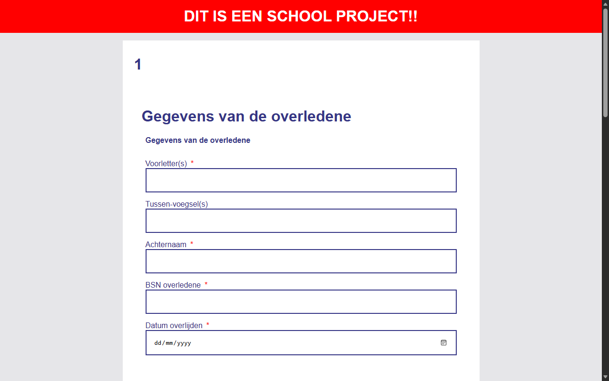

Browser Tech

Over dit projectAbout this project
In dit vak stond toegankelijkheid en robuustheid centraal. Het doel was om een webapplicatie te bouwen die voor iedereen werkt, ongeacht de browser, het apparaat of de internetverbinding. Ik leerde dat wat voor mij als ontwikkelaar logisch voelt, niet altijd logisch is voor de gebruiker.
This course focused on accessibility and robustness. The goal was to build a web application that works for everyone, regardless of browser, device or internet connection. I learned that what feels logical to me as a developer isn't always logical for the user.
FunctiesFeatures
Probeer het zelf — dit fragment uit het echte formulier werkt in elke browser, op elk apparaat, ook zonder JavaScript: Try it yourself — this fragment of the real form works in every browser, on every device, even without JavaScript:
- Opgebouwd met semantische fieldsets en labels — klik in een veld. Built with semantic fieldsets and labels — click into a field.
- Progressive disclosure: vervolgvelden verschijnen pas wanneer je antwoord daarom vraagt — antwoord 'Ja'. Progressive disclosure: follow-up fields only appear when your answer calls for them — answer 'Yes'.
- Validatie met HTML-attributen en CSS, zonder JavaScript — typ een BSN. Validation with HTML attributes and CSS, no JavaScript — type a BSN.
Gebruikte technologieënTechnologies Used
- HTML met semantische formulierelementen (fieldset, datalist, native validatie)
- CSS voor styling én validatie-feedback
- JavaScript alleen als verrijking, niet als vereiste (progressive enhancement)
- HTML with semantic form elements (fieldset, datalist, native validation)
- CSS for styling and validation feedback
- JavaScript only as an enhancement, never a requirement (progressive enhancement)
Wat ik heb geleerdWhat I learned
Je moet dingen echt duidelijk maken voor de gebruiker. Progressive enhancement zorgt ervoor dat je website altijd werkt, ook zonder JavaScript of met een trage verbinding.
You really have to make things clear for the user. Progressive enhancement ensures your website always works, even without JavaScript or on a slow connection.